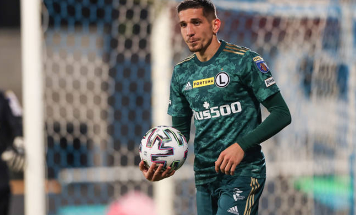
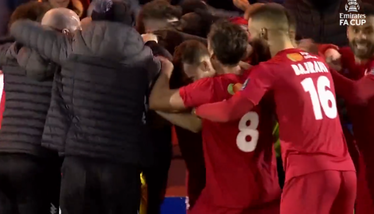
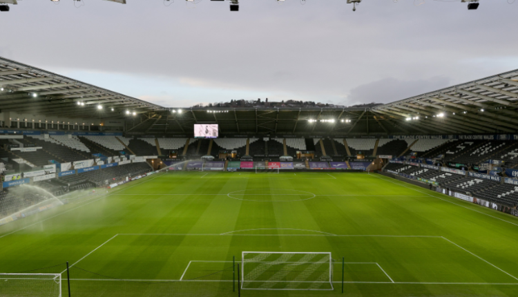

Kuqezi
Gjermanët çuditen nga emri i futbollistit të Shqipërisë, Klaus Gjasula mund ta vazhdojë karrierën në VAR: Arbitër nuk bëhem dot nga mosha…
Klaus Gjasula ka dhënë një intervistë në mbrëmjen e djeshme për “Super 2”. Gjermanët vazhdojnë që të jenë të habitur për faktin se Klausi dhe Jurgeni kanë një emër tipik gjerman, nga ata të vjetrit, që u janë vendosur që kur lindën në Shqipëri. Asokohe familja e tyre jetonte në vendin tonë dhe nuk kishin asnjë lidhje me Gjermaninë.Por vetë Klaus Gjasula ka shpjeguar edhe historinë e emrit, që lidhet me një film gjerman. “Emri më është vendosur nga gjyshja. Për shkakun e një filmi gjerman që është ndjekur shumë nga familjarët tanë në Shqipëri, aktori kryesor i atij filmi e ka pasur emrin e tij të vërtetë Klaus Jurgen. Për këtë arsye mua më kanë quajtur Klaus dhe vëllain tim, Jurgen”, shpjegon Gjasula.I pyetur për heqjen e helmetës, mesfushori nënvizon: “Kur do të luaja me Ingolstad, kisha helmetën në dorë rreth 20 sekonda para se të niste ndeshja. Ta vendosja apo jo? Edhe vetë nuk e kisha marrë vendimin. Pastaj vendosa që ta heq pasi te Hamburgu kam kaluar vitin tim më të keq dhe doja që ta nisja nga zero, një fillim të ri. Pastaj ishte edhe një vapë e tmerrshme që të rriste temperaturat në kokë”.

Lirim Kastrati nuk po bindet nga Legia, trajneri i ri e kthen stërvitjen e luksit në testim të sikletshëm
Legia ka udhëtuar drejt Dubait atje ku do të stërvitet për rreth dy javë. Por nëse ky udhëtim mendohej si mundësi për t’u çlodhur pas ngarkesës dhe presionit të jashtëzakonshëm të kampionatit, në fakt nuk është e tillë.Trajneri i ri, Vukovic, po sheh nga afër dhe me shumë vëmendje të gjithë lojtarët. Futbollistët që nuk do e bindin do t’i jepet menjëherë dora për të dalë që në merkaton e janarit. “Meczyki” raporton se një prej futbollistëve shqiptar mund të rrezikojë largimin.Bëhet fjalë për Lirim Kastratin që për momentin ka ngelur jashtë këtij udhëtimi pas infektimit me COVID, por sipas medias polake nuk ka marrëdhënie të mirë mes Legias dhe Kastratit.
Ndryshe nga të tjerët pas kalimit në Suedi, Besfort Zeneli tregon modelin që ka në futboll: Vëllain tim!
I riu nga Kosova, Besfort Zeneli iu bashkua vetëm pak ditë më parë skuadrës së Elfsborgut në Suedi, në të cilën më parë kishte luajtur edhe vëllai i tij, Arbër Zeneli, që tashmë aktivizohet tek skuadra e Reims në Francë. Në një intervistë për “Insport”, Besfort deklaroi se është mjaft i lumtur për këtë transferim. Ai gjithashtu deklaroi se vëllai i tij, Arbëri, është idhulli i tij.“Kam pas dëshirën për të luajtur tek Elfsborg edhe kan punuar shumë për të arritur këtu ku jam. Që kur kam qenë i vogël vëllezërit e mi kanë luajtur, babai im ka luajtur, e tërë familja jemi futbollistë dhe gjithçka te mua ka nisur prej familjes. Vëllain tim, Arbërin gjithmonë e kam pasur si idhull, gjithmonë kemi luajtur bashkë në fushën e futbollit të qytetit ku kemi banuar. Endërrat i kemi pasur të njëjta, tani të shohim si do na shkojë të dyve” – u shpreh Besfort Zeneli.

E pabesueshme/ Përralla e Geraldo Bajramit në Angli! Ekipi i Kategorisë së 6 eliminon Reading të Championship, jashtë fantazisë
Geraldo Bajrami ka qenë një tjetër element që ka spikatur së tepërmi te Shqipëria U-21. I rritur te Birminghami dhe me shiritin e kapitenit tek të rinjtë, karriera e këtij mbrojtësi me shumë potencial për të ardhmen nuk vazhdoi ashtu siç pritej. Aktualisht Bajrami është pjesë e Kiddermanster, që luan në National League North, e thënë më thjeshtë, Kategoria e 6 e futbollit në Angli. Por ky nuk përbën lajm pasi ekipi i Bajramit është i ditur prej kohësh.Ajo që duhet të vendosim në dukje është çmenduria që ofron futbolli anglez. Geraldo Bajrami ka luajtur si titullar dhe për 90 minuta të plota në “çmendurinë” që tejkalon çdo imagjinatë. Kiddermanster ka mundur me shifrat 2-1 dhe ka eliminuar nga “FA Cup” një emër të njohur të Championship si Reading.Festa ishte e jashtëzakonshme në dhomat e zhveshjes dhe me të drejtë. Jo pak, por 4 Kategori ishte diferenca mes dy ekipeve dhe në fund fitoi ekipi që gjendej në Kategorinë më të ulët. Në çdo rast tjetër do të pritej një humbje turpëruese, por futbolli anglez është jo më kot më i forti në botë. Në momentin që mendon se fitorja mund të merret më lehtë duke parë emrin e rivalit, pikërisht atëherë ke firmosur humbjen.
Migjen Basha: Licenca UEFA A, me shumë vlera. Synoj të shkoj larg si trajner!
Ish-futbollisti i njohur i Kombëtares, Migjen Basha, i ka hyrë tashmë karrierës së trajnerit, teksa është bërë pjesë e edicionit të radhës të kursit të licencimit për trajnerë të nivelit UEFA A, që është niveli i dytë për nga rëndësia pas licencës UEFA PRO. Ish-mesfushori kuqezi është mjaft entuziast për këtë rrugëtim të ri në karrierën e tij, ndërsa vlerëson shumë punë që po bëhet për këtë program arsimor me një kurrikul të mirëpunuar nga FSHF-ja në bashkëpunim me UEFA-n.Në intervistën e dhënë për Fshf.org, Migjen Basha tregon se si e sheh kursin deri tani si edhe për synimet që ai ka në të ardhmen, duke mos fshehur edhe ëndrrën që një ditë të ketë mundësinë të bëhet edhe trajner i njohur, mbase edhe i Kombëtares.KURSI UEFA A – “Deri në këtë moment kursi ka qenë vërtetë shumë interesant, sepse nuk kemi biseduar vetëm sa i përket anës teknike dhe taktike, pasi në momentin që ke dëshirën dhe objektivin të bëhesh trajner profesionist duhet të dish edhe shumë aspekte të tjera. Aktualisht kemi punuar me pjesën teorike dhe në vazhdim besoj se do të punojmë edhe me pjesën praktike në fushën e lojës. Është me rëndësi që të diskutojmë për disa aspekte, që ndoshta kur kam qenë futbollist asokohe nuk i kisha problem, sepse mendoja për lojën në fushë dhe në momentin që kalon në rolin e trajnerit fillojnë shumë e më shumë probleme. Duhet të bisedosh me drejtuesit, ke 25 lojtarë me të cilët duhet të diskutosh çdo gjë, me stafin teknik, mjekësor, etj., por besoj se me kalimin e kohës do t’ia arrijmë të gjitha qëllimet”.

E FUNDIT/ Southampton do të luajë në orën 18:30 ndaj Swansea, Armando Broja është gati për golin e parë në 2022
Pas ndeshjes së shtyrë ndaj Newcastle, Southampton do të luajë ndeshjen e parë të vitit 2022 në orën 18:30. Ekipi i drejtuar nga Hasenhutl do të përballet në transfertë ndaj Swansea, në ndeshjen e vlefshme për FA Cup.Vetëm pak minuta më parë janë publikuar edhe formacionet zyrtare. Armando Broja do ta nis nga minuta e parë ndeshjen kundër Sëansea duke iu dhënë mundësia që të shënojë golin e parë në këtë vit.